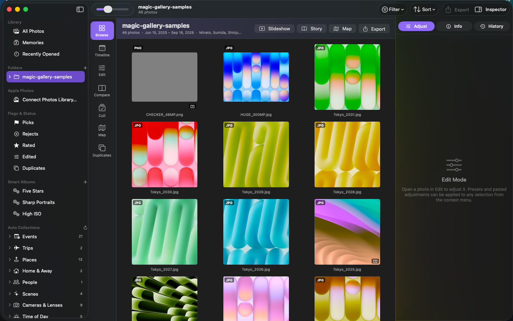
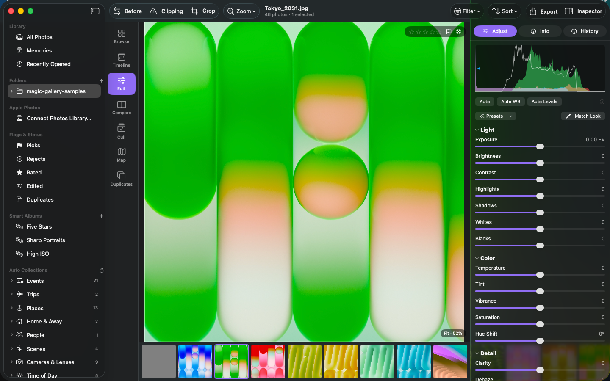
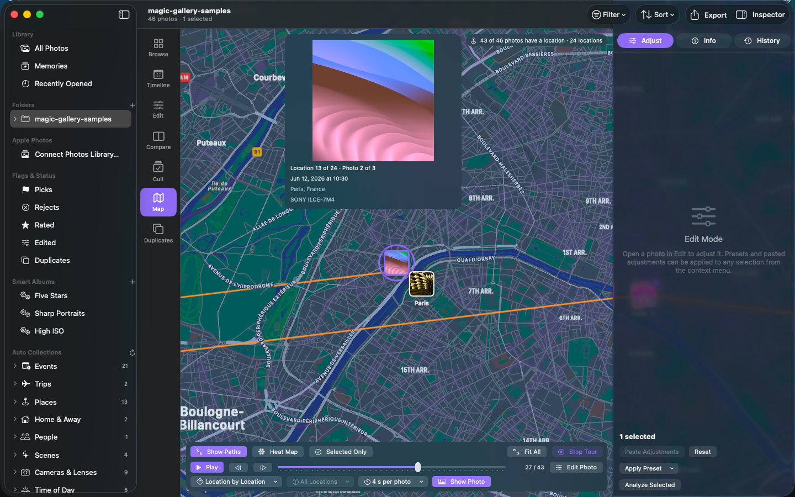
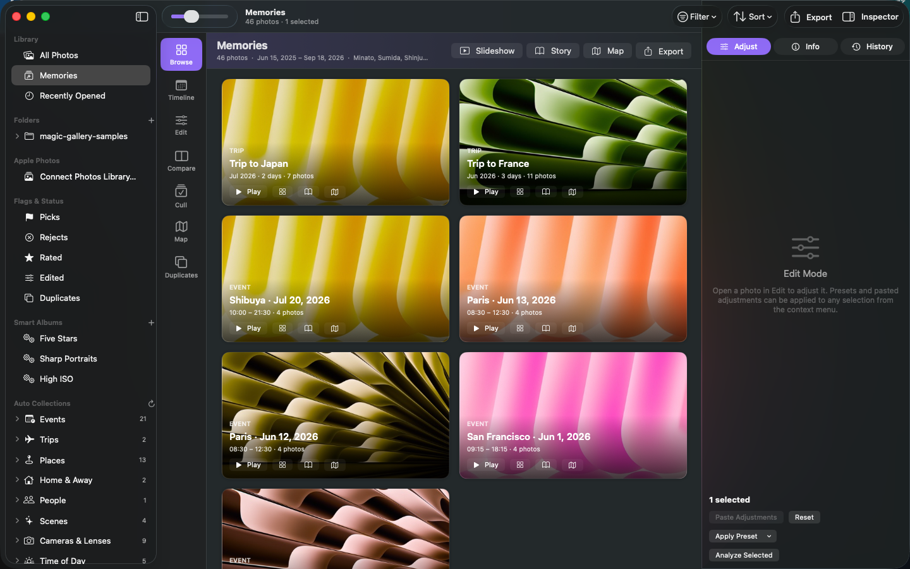
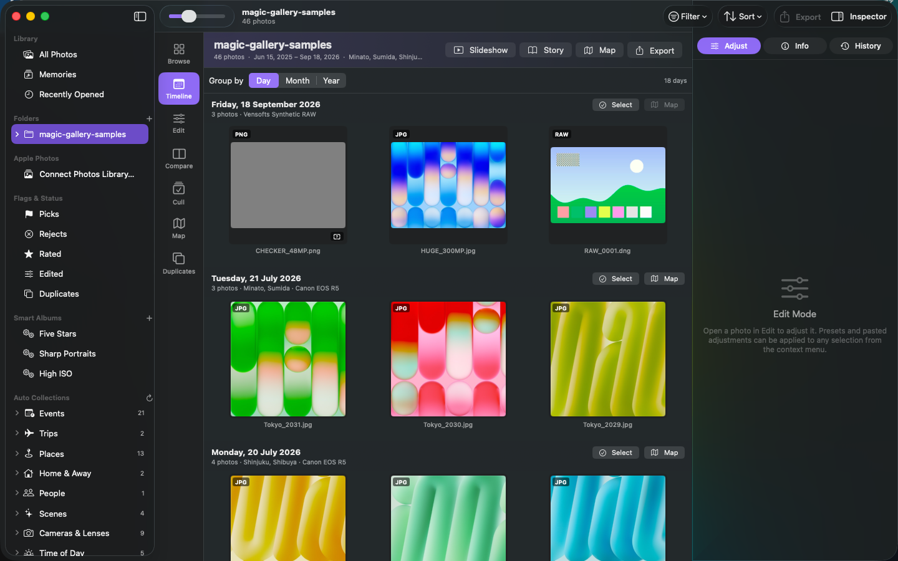

Magic Gallery is a fast, non-destructive RAW editor and photo browser for macOS. No importing, no copies. Apple's RAW engine on the GPU, a map that replays your journeys, and collections that organise themselves — all on your Mac.
Download on the Mac App Store SupportRequires macOS 14 Sonoma or later. Free to browse and organise; Magic Gallery Pro (editing, export, stories, Photos extension) is $9.99/month or $79.99/year with a 7-day free trial.

Photos clustered by place with travel paths. Press Play Tour and the map walks through every location, photo by photo, with a card showing date, place and camera.
Events, trips, places, home & away, on this day, people, scenes, cameras, time of day, colours — built automatically from your photos' metadata.
Trips and events become slideshows with motion and captions, or a shareable story: a web page and PDF with the route map and photos by day.
Apple RAW engine controls, curves, levels, split toning, LUTs, geometry, presets, snapshots, batch export — GPU accelerated, smooth even on 300-megapixel files.
Smart Tags, text-in-photo search, focus score, duplicate finder, face grouping. Nothing leaves your Mac.
Open your Apple Photos library without importing, and use the Magic Gallery editing extension right inside Photos.



